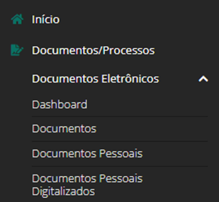
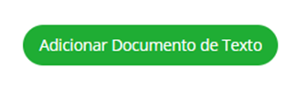
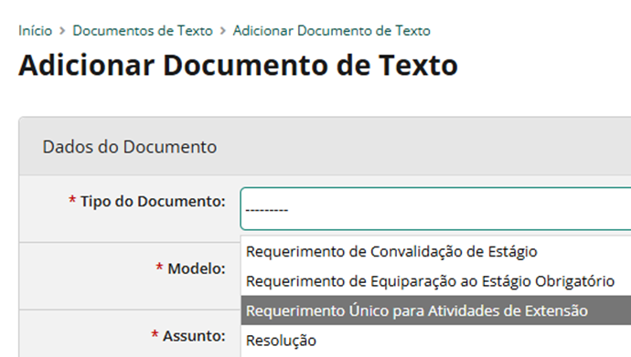

Como substituir um estudante bolsista
Siga as três etapas abaixo para formalizar a substituição junto à Pró-Reitoria de Extensão.
Tenha em mãos o número do edital, o nome completo do projeto, o campus e os dados do novo estudante bolsista.
-
Crie e assine o requerimento no SUAP
No SUAP, acesse Documentos/Processos → Documentos Eletrônicos → Documentos e clique em Adicionar Documento de Texto.

1. Acesse a área de Documentos Eletrônicos. 
2. Clique em “Adicionar Documento de Texto”. No campo de tipo, selecione “Requerimento Único para Atividades de Extensão”. Preencha as informações necessárias, assine eletronicamente, finalize o documento e faça o download do arquivo assinado.

Selecione o tipo correto de requerimento. -
Solicite o termo ao novo bolsista
Peça ao estudante que preencha e assine o Termo de Compromisso do Estudante Bolsista.
Termo de Compromisso do Estudante BolsistaDocumento oficial em PDF · 3 páginasBaixar termo em PDF ↓ -
Encaminhe os documentos por e-mail
Envie o requerimento assinado e o termo de compromisso preenchido para cotex@ifms.edu.br, com cópia para coeri.tl@ifms.edu.br.
No texto do e-mail, informe:Preparar e-mail de solicitação →- o edital;
- o nome do projeto;
- o campus;
- o nome do estudante que será substituído e do novo bolsista.
Os dois documentos devem estar preenchidos e assinados. Não se esqueça de anexá-los ao e-mail: o botão acima apenas prepara os destinatários, o assunto e o texto da mensagem.